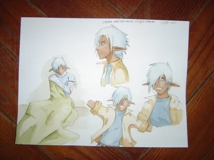
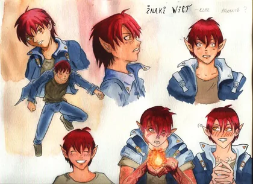
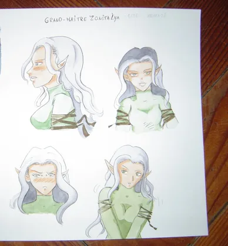
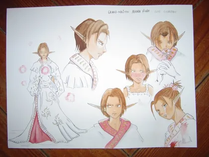
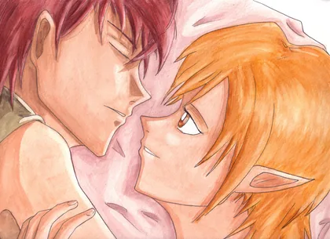
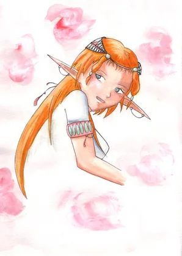
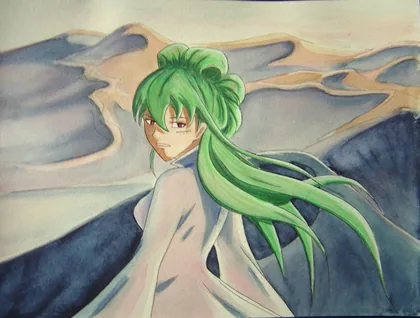
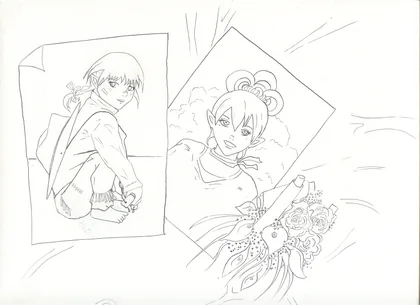
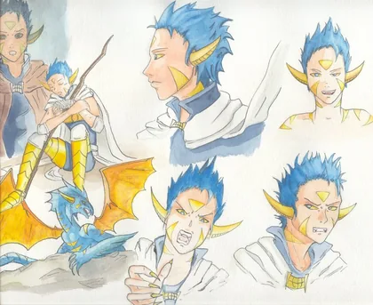

15 images · Touchez une image pour l’agrandir.























Les créations de Namea · Anne
Explorez les illustrations, croquis et recherches de personnages du tome 1 de Globus Cruciger, par Anne, alias Namea.
15 images · Touchez une image pour l’agrandir.








